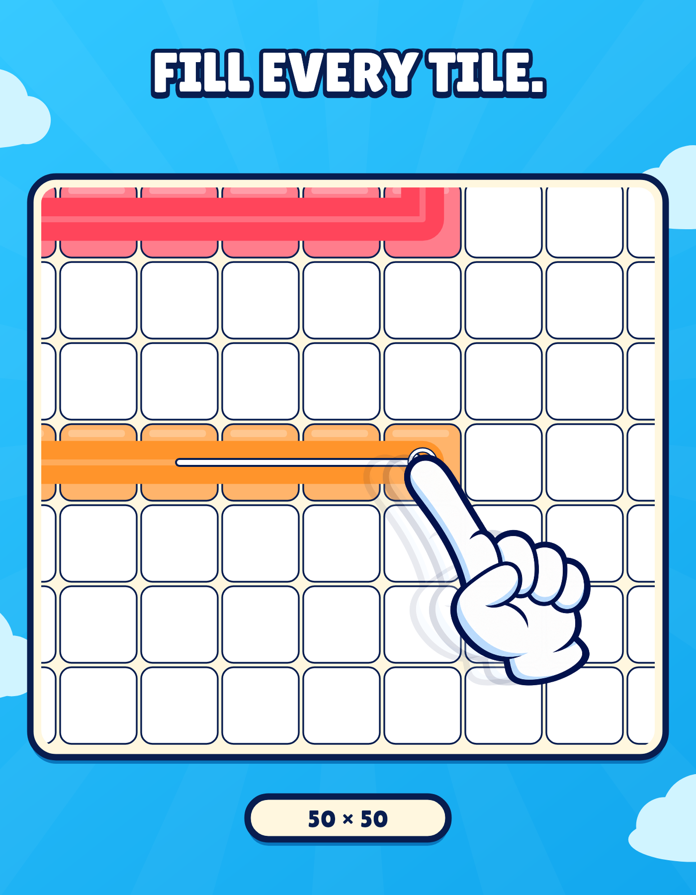
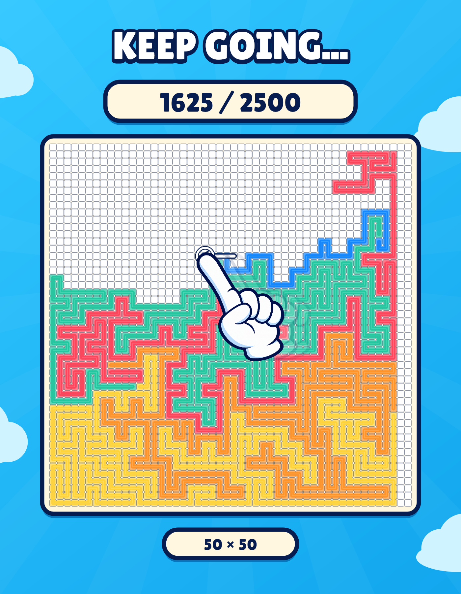
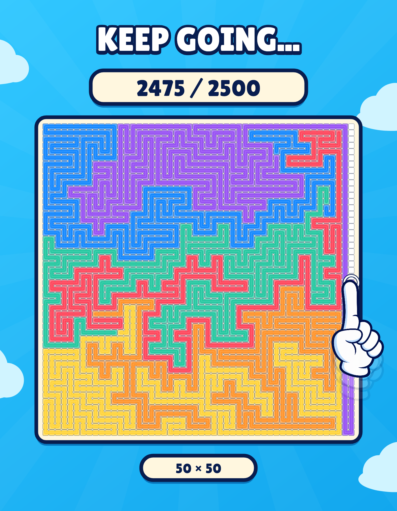
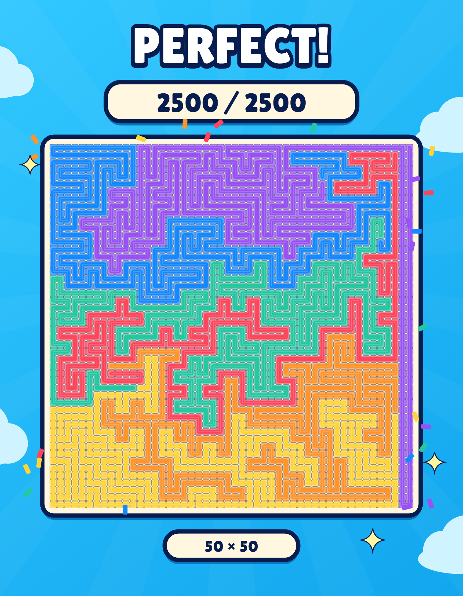
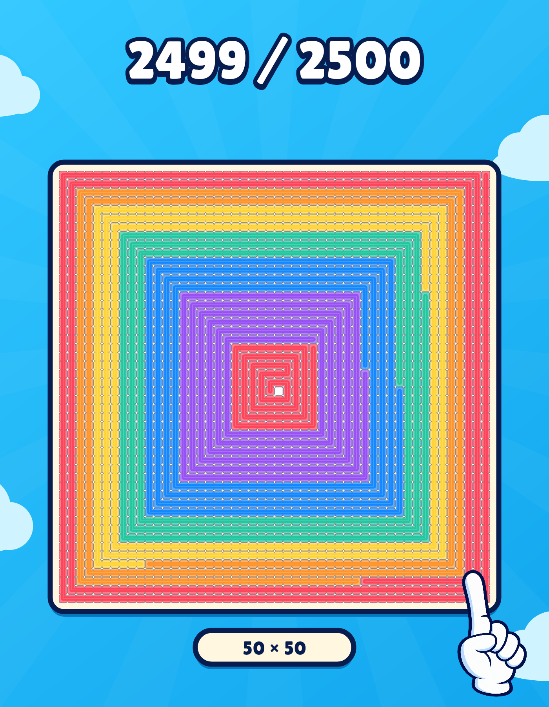
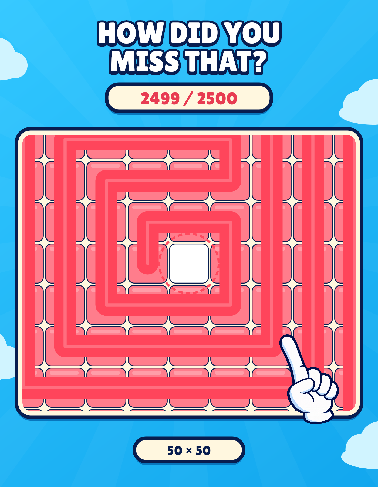
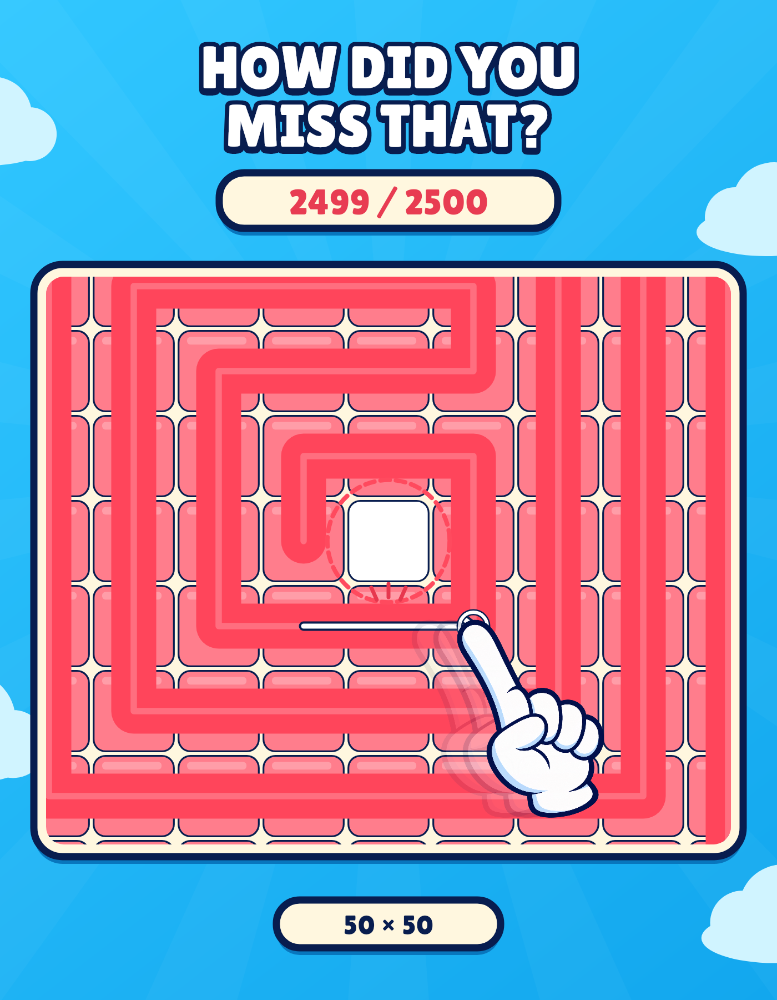
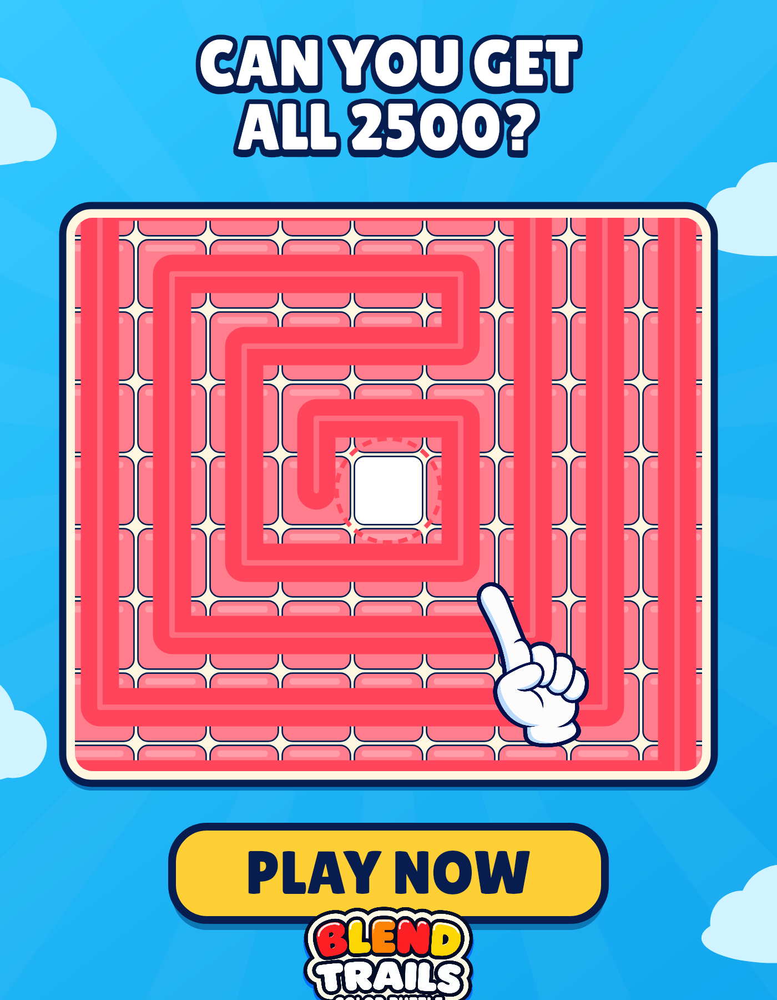

45秒広告の画面イメージ8枚。すべて1400×1800。50×50＝2500マスを実際に描画し、後半は中央付近に白い1マスだけを残しています。手・接触リング・矢印・残像でスワイプを示します。動画制作前の静止画確認用です。

接写・ジッパースワイプ
FILL EVERY TILE.

引き・50×50の巨大盤面
KEEP GOING...

最後の列を埋める
2500 / 2500 へのカウントアップ

2500マス完成
2500 / 2500 → PERFECT!

新盤面・2499で停止
2499 / 2500

中央の白い1マスへズーム
HOW DID YOU MISS THAT?

引き直し・曲がる場所を間違える

白い穴を残してCTA
CAN YOU GET ALL 2500? / PLAY NOW
8枚の一覧PNG ／ 素材一式ZIP ／ 演出メモ ／ 寸法・マス数・制作記録